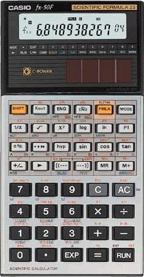

WebCal 計數機網頁
Casio fx-50F簡介
|
 |
Casio
fx-50F是於1987推出的 科學計數機，亦是香港會考 的准用計數機，操作方面亦 相當簡單及容易，除基本的 計算功能外，亦有基數及分 數運算功能，較特別之處為 內置程式庫，總共有23個內 置程式，應用的範圍亦相當 廣闊，除了數學程式，還有 統計學、物理、電學及工程 方面簡單實用程式。 |
對於數學會考有用的程式有一元二次方程、餘弦定律、希
羅公式及兩個標準常態分佈概率函數。程式方面，程式長
度為29步，實在太少，亦是這部程式計數機的較大缺點，
不過依然可以編寫一些實用而簡單的程式。另外這部計數
機還有一個優點，耗電量低，光電池的效率高，在一般室
內環境光線之下，計數機能夠正常運作，因此就算電池電
能用盡，亦可以使用，甚至可以不更換新電池，所以相當
環保。或許因為上述的優點，即使fx-50F是一部很舊款計
數機，同期舊款的會考計數機大都停產，但50F依然繼續生
產，依然是香港最多中學生及老師使用的計數機。
有用連結
以下網址為教育城中有關fx-50F操作示範及練習，可以幫助大家熟習 fx-50F的操作，亦都是一些會考數學常用的技巧，亦即是利用計數機直接找出答案。
http://www.hkedcity.net/ihouse_tools/cabinet/show_files.phtml?id=158871&cabinet_id=95554